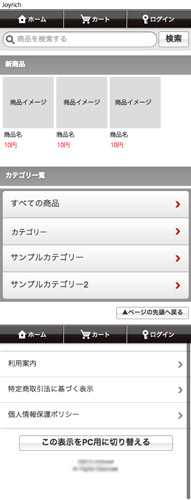
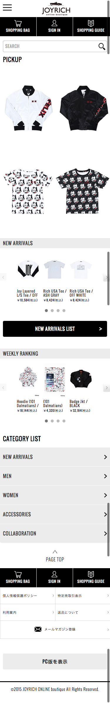
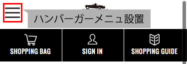
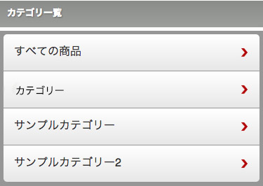
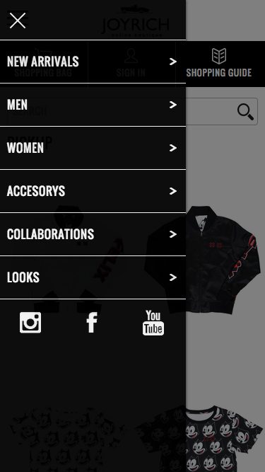

実績報告資料 2015
目標管理プレゼン資料
Created by Taichi Suzuki
ツールについて紹介
HTMLで動くプレゼン資料
Reveal.js
- 実績について
- 制作ツールについて
- 制作フローについて
- チェックツールについて
- 今後の課題
入社から現在までの実績
実際の案件一覧
- POINT 改修/修正
- OVERRIDE 改修/修正/運用
- KANGOL 改修/運用
- 全優石 改修/修正
- AKDirect 改修/修正/制作
- Joyrich 改修
- Joynt 改修/修正
- HAREタブロイド 制作
- NTTイントラ 修正/運用
- ブッシュクロフィード 制作
実績といっても主に改修・修正・運用がメイン
ほぼほぼ実績とは呼べないもなので
以下の２つをピックアップしました。
- Joyrich ECページの改修
- ブッシュクロフィードの制作（現在製作中）
色々案件がある中でも
なぜこの２つか？
- 理由１
- 新たな技術の導入
- 理由２
- 従来の制作フローの検討
Joyrich ECページの改修
MAKE SHOPの基本デザインからオリジナルのデザインに変更
- Before
- 
- After
- 
私がやったこと
最初クライアント＆ディレクターのからきた改善UIではヘッダーにメニューがなかった
ヘッダーにハンバーガーメニュー設置
使いやすさを考えたUIに
自分自身の考えでしか無いがより良いUIを考えた
- Before
- 
- After
- 
結果
クライアントに喜んでもらえた。
課題
- UI/UXをもっと勉強して改善案等を提案していきたい（フロント側からみて）
- プロトタイプの製作などしていきたい
技術の導入について
この改修にあたり以下のことがしたかった
- アイコンをスプライト画像に
- SPなのでパフォーマンスを考えたファイル圧縮
- 作業の効率化スピードアップ
実際やるにあたり課題がありました
- スプライト画像つくるのめんどくさい
- たくさんファイルが有り色々やるのが面倒
- テストも含めると時間が足りない
じゃあどうするのか
自動化する！！！
タスクランナーツールの導入

いろんなタスクツールがある。
タスクの管理しやすさから
gulp（ガルプ）を導入！！
タスクランナーツールについて
タスクを自動化してくれるツール
node.jsで開発されており、Sass/CompassやLess、StylusなどのCSSプリプロセッサーのコンパイルやCSS/JSの結合圧縮、JSHintによるバリデーション、簡単なWEBサーバなど様々なタスクを自動で行ってくれます。
Gruntとできることはほとんど同じですが、Gruntよりタスクの流れがわかりやすく、JavaScript(node.js)で独自のタスクも簡単に記述することができます。
結果
便利になり作業効率化できスピードアップした
課題
個々にスキルギャップあるのでそれを少なくするためにどうするのか・・・（考え中）
従来の制作フローの検討
今まではデザインデータをもらって制作していた。
基本的には変わらないんですが以下のことブッシュクロフィードでは実施
- スタイルガイドの導入
- 仮想環境構築
- テストツールの使用
スタイルガイドの導入
スタイル ガイドは、特定の言語について用字用語やスタイル上の決まり事が定義されたルール集。
カスタム製が高くsass.scss.css.jsに対応していてgulpで管理できるため
Horoglamを導入！！
なぜスタイルガイドなのか
- 基本的な知識があればだれでも運用できる
- スタイル追加する際ルールが明確
- サイト制作でページ制作前に作ることでComponet化でき制作が楽になる(大型案件は特に)
- レガシー・モダンブラウザでの挙動のテストが簡単
結果
制作＆運用においてのスピード改善できてクオリティ向上
課題
- スキルギャップ
- 案件によって不向きがある(案件レベルでわけるなど考え中。。。)
仮想環境構築
従来どおりの XAMPP MAMP等の仮想環境のツールがあるが管理がむずかしい
Vagrantを導入！！
Vagrant
仮想環境を構築するツール
- 一人が作った環境設定を共有して使えるため導入が簡単
- OS・Apache・nginx（エンジンエックス）等を自由に設定できる
- プロジェクトごとに環境を作れる
結果
- 簡単に環境構築できてFTPする前にテストしやすくなった
- ローカルでCMSの環境を再現できるため制作＆管理しやすくなった
課題
- スキルギャップ
- 導入が少しむずかしい
テストツールの使用
HTML・CSS・Javascriptを公開する前にファイルのテストをします。
HTMLファイルのテスト
基本的に以下を確認します。
- 閉じタグのチェック
- Web標準に満たしたコーディングされているか
Web標準に満たしたコーディングされているか
HTML CodeSnifferW3Cが定めているWeb標準に満たしているかチェックするツールです
CSSテストツール
CSSは特に重要です。
基本的に以下を確認します。
- セレクタの強度
- 記述構文について
セレクタの強度
CSS Specificity Graph Generatorセレクタの強度をチェックしグラフ化してくれます
基本的にこのグラフは右上がりになりるのが好ましいといわれていて
それ以外の強度が強いサイトはCSSの設計が良くなく運用向きではないということです
記述構文について
CSS Lint構文のチェックツールです
Javascriptテストツール
javscriptのチェックは基本的に以下を確認します。
- 構文のチェック
- メンテナンス性
- パフォーマンス
Javascriptチェックツール
PlatoJavascriptはこのツール一つで全部チェックできGulpで管理できてレポートを書き出してくれます
Plato Sampleサイト全体チェックツール
Google PageSpeed Insightsページ全体のパーフォーマンスのチェックができSP、PCの両方に対応している。
Plato Sample結果
- チェックを徹底することで品質とパフォーマンスの向上につながる
- どこが悪いかわかるので改善・修正がしやすい
課題
- もっと簡単にテストをしたい
- レガシーブラウザとモダンブラウザのチェックが難しい
今後の課題
- 制作フローをもっと効率化して制作スピード＆クオリティ＆パフォーマンス向上する。
- 一定の品質を保つためにルールの策定
- よりよいものを作るためにテストに時間をかけたい
- 自分の考えや知識をどうやってアウトプット＆共有していくか。
- 技術をもっと見える用にしてクライアントにイケてるサイトです言えるようにしたい
- 新規で制作する場合はもっと打ち合わせしてどんな技術で作るとか話して決めていきたい